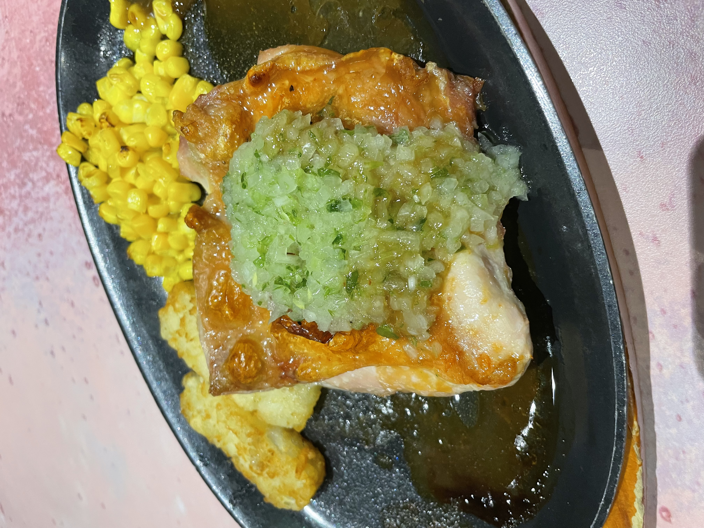
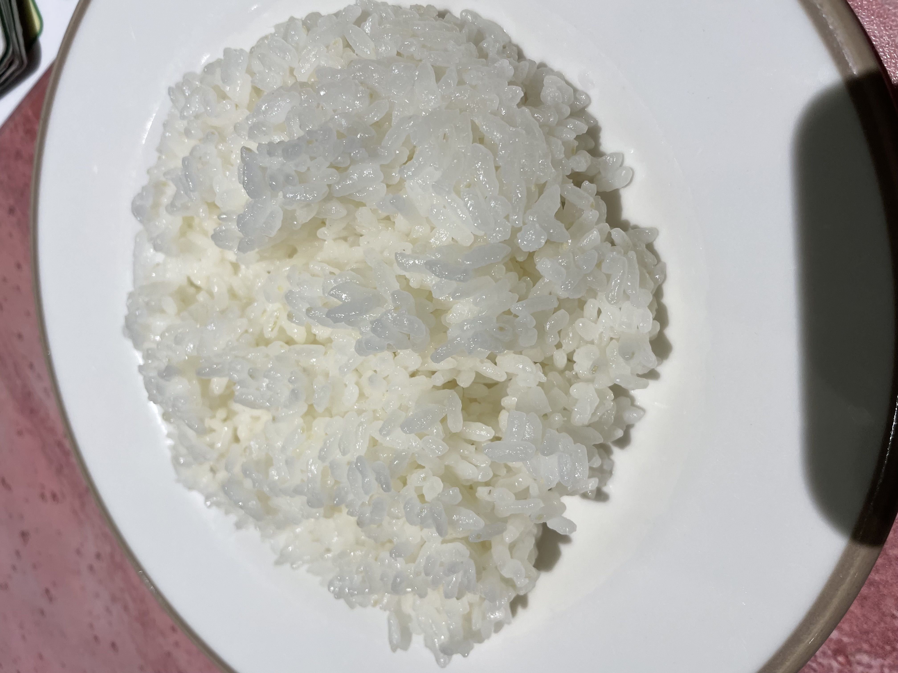
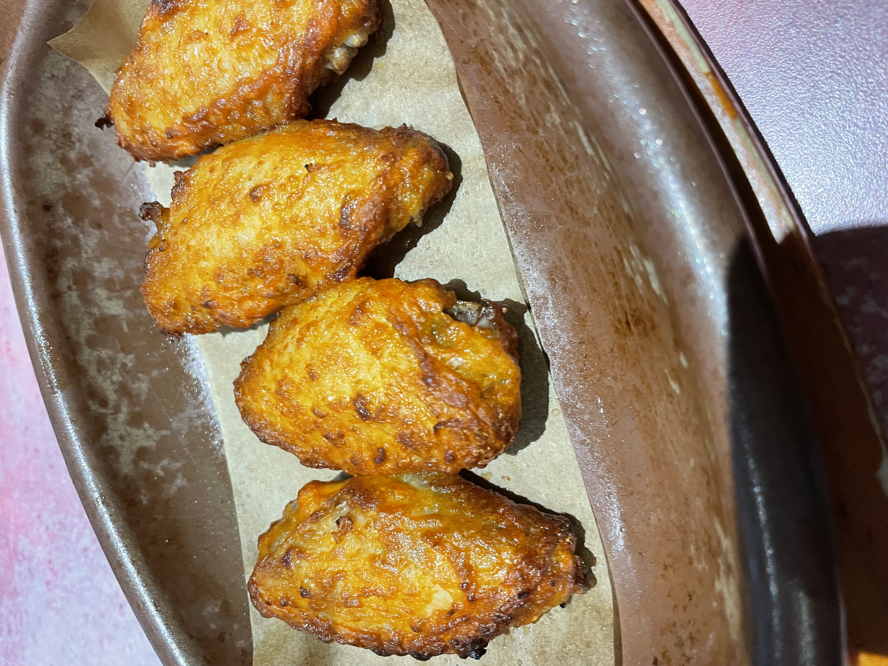

26/2/12（Posted）TERUO＠teruo
Good.I want to eat it again. I think the sauce is good.
■Young Chicken Diavolo Style × Rice（× At the end, put the rice on the hot plate and mix it with the corn and sauce before eating. I call it “corn rice” lol）
⇒★★★★ 4.0
■Saizeriya Aeon Mall Nagoya Dome-mae
■Nagoya City
■650yen
■Ate day：26/2/7

 (Photo taken by myself)
26/2/11 (Posted) TERUO＠teruo
Good.
■Spicy Chicken
⇒★★★★ 4.0
■Saizeriya (Aeon Mall Nagoya Dome-mae)
■Nagoya City
■300yen
■Ate day: 26/2/7
 (Photo taken by myself)
26/2/7（Posted）TERUO＠teruo
I was impressed. yummy.
■Spicy Chicken（× Order only the spicy chicken. Focus and eat it.）
⇒★★★★ 4.0
■Saizeriya Aeon Mall Nagoya Dome Mae
■Nagoya City
■300yen
■Ate day：26/2/2

（Photo taken by me）